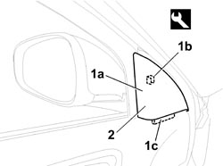

7005E12 CORNER COVER FOR ONE FRONT SIDE DOOR, LH OR RH - R.R.
- Path
- Procedures > 70 FITTINGS > 7005 PASSENGER COMPARTMENT FRONT SIDE DOORS > 7005E FRONT DOOR TRIM > 7005E12 CORNER COVER FOR ONE FRONT SIDE DOOR, LH OR RH - R.R.
- Kind
- repair procedure (removal / refitting; the operation number is the code)
- Applies to
- all engines; all production periods
- Interactive page
- https://sloeber94.github.io/elrnDB/#/939011137
Applies to: all engines; all production periods
 Removing
Removing
 Refitting
Refitting1. Release the corner cover (1a) from the inner retainers (1b) and (1c) using the special tool.
Tool | Description | Function | Validity |
|---|---|---|---|
1823015000 | Knife | Retainer removal |
2. Keep the corner cover.

Applies to: all engines; all production periods
Refitting
Removing- Check that the corner cover and retainers are not damaged.
- Fit the corner cover engaging the inner retainers.
Topics that link to this page (21)
- 5505A42 CONTROL UNIT (DIGITAL NETWORK NODE) IN DRIVER'S DOOR - R.R.
- 5505B11 FRONT DOOR WIRING (ONE) LEFT OR RIGHT - R.R
- 5570T90 FRONT SPEAKER (ONE), LEFT OR RIGHT - R.R
- 5580E18 ANTI-THEFT DEVICE W/L - R+R FOLLOWING ELECTRICAL WIRING CHECK
- 7005A09 FRONT SIDE DOOR INTERIOR SUPPORT FRAME - R.R.
- 7005C11 FRONT SIDE DOOR EXTERIOR HANDLE - R.R
- 7005C41 FRONT SIDE DOOR EXTERIOR HANDLE LOCK CONNECTION LINK - R.R
- 7005C53 FRONT SIDE DOOR INTERIOR OPENING HANDLE (ONE), LEFT OR RIGHT - R.R.
- 7005D15 FRONT SIDE DOOR DESCENDING WINDOW GLASS (ONE) LEFT OR RIGHT - R.R
- 7005D18 FRONT SIDE DOOR DESCENDING WINDOW GLASS CHANNEL (ONE), LEFT OR RIGHT - R.R
- 7005D25 FRONT DOOR WINDOW REAR GUIDE - R R
- 7005D26 FRONT SIDE DESCENDING WINDOW GLASS SCRAPER (OUTER) (ONE), LEFT OR RIGHT- R.R
- 7005D30 FRONT SIDE DESCENDING WINDOW GLASS SCRAPER (INNER) (ONE), LEFT OR RIGHT - R.R.
- 7005D33 CHANNEL FOR DOOR DESCENDING GLASS INNER GUIDE (ONE) LH OR RH ON FRONT SIDE DOOR - R.R.
- 7005E10 FRONT SIDE DOOR INTERIOR PANEL - R.R.
- 7005E50 FRONT SIDE DOOR PILLAR TRIM (ONE) LH OR RH - R.R.
- 7005M26 ELECTRIC WINDOW MECHANISM FOR ONE FRONT DOOR LH OR RH - R.R
- 7005M29 FRONT SIDE DOOR ELECTRICALLY OPERATED WINDOW MOTOR, LEFT OR RIGHT - R.R
- 7005N21 FRONT SIDE DOOR LOCK MOTOR/LOCK ASSEMBLEY FOR ONE DOOR, LEFT OR RIGHT - R.R.
- 7005R30 ELECTRICALLY CONTROLLED DOOR MIRROR (ONE) - R+R
- 7205E36 STRIPPING FRONT SIDE DOOR